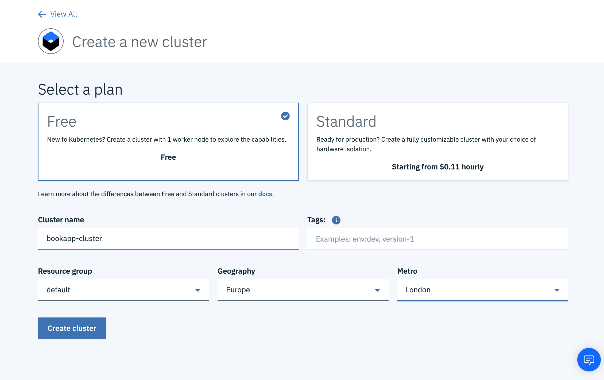

Deploying with Kubernetes
Kubernetes is a platform for managing containerized applications and services. Kubernetes allows you to automate the deployment, scaling and management of your containerized applications.
With Kubernetes you can deploy your application to any cloud provider, but for this guide we will be using IBM Cloud as an example.
Step 1:Create Cluster on IBM Cloud
Before we can create a Kubernetes Cluster on IBM Cloud we need to create an IBM Cloud account.
Once we have an IBM Cloud account we can create a Kubernetes cluster by visting the IBM Cloud Catalog.
Below is the config we need:
Ensure the Free plan option is selected and the cluster name is bookapp-cluster
Set Geography and Metro to whatever is local to you.
Creating a cluster takes several minutes so grab a tea/coffee in the meantime!
Step 2: Configure Cluster Config
Now that we have our cluster we need to provide access to it via the CLI.
Download the required CLI tools using the Kitura CLI:
kitura idt
If you don't have the Kitura CLI installed you can also install the idt tools with the following command:
curl -sL https://ibm.biz/idt-installer | bash
Now we can log into IBM Cloud on the command line:
ibmcloud login -a cloud.ibm.com -r eu-gb -g default
Once we have logged in we need to get our cluster config file:
ibmcloud ks cluster-config --cluster bookapp-cluster
This command outputs an export command to the terminal. We need to copy and paste that command and run it.
Then we can verify we can connect to our cluster by running:
kubectl get nodes
Step 3: Update Helm chart
Helm is a package manager for Kubernetes applications. Helm allows you to define templates for your Kubernetes manifest files and a values.yaml which is used to populate those templates.
If you created your application using the CLI or the macOS app then you should already have a Helm chart provided.
If not then you can follow the Helm docs to create your own chart
The Helm chart provided with the Kitura CLI and macOS is configured out of the box for the application.
All we need to do is update the values.yaml to point at the location of our Docker container:
# This is a YAML-formatted file.
# Declare variables to be passed into your templates.
replicaCount: 1
revisionHistoryLimit: 1
image:
repository: icr.io/my-bookstore/bookbackend
tag: v1.0.0
pullPolicy: Always
resources:
requests:
cpu: 200m
memory: 300Mi
livenessProbe:
initialDelaySeconds: 30
periodSeconds: 10
service:
name: swift
type: NodePort
servicePort: 8080
hpa:
enabled: false
minReplicas: 1
maxReplicas: 2
metrics:
cpu:
targetAverageUtilization: 70
memory:
targetAverageUtilization: 70
base:
enabled: false
replicaCount: 1
image:
tag : v0.9.9
weight: 100
istio:
enabled: false
weight: 100
Step 4: Deploy Application
First we need to install Tiller into our cluster:
helm init
Tiller is the in-cluster component of Helm. It interacts directly with the Kubernetes API server to install, upgrade, query, and remove Kubernetes resources. It also stores the objects that represent releases.
Finally we can deploy our application using Helm install:
helm install —name bookstore-app .
Step 4: View Deployed Application
To veiw our application running on IBM Cloud we need the Public/external URL and the exposed NodePort.
Get Public URL:
ibmcloud cs workers bookapp-cluster
Get NodePort:
First we get a list of all of the running services:
kubectl get services
Then we get the NodePort of our service:
kubectl describe service bookstore-app-service
Then in a browser we can navigate to:
http://<public-url>:<NodePort>
We should now see our application running on IBM Cloud!